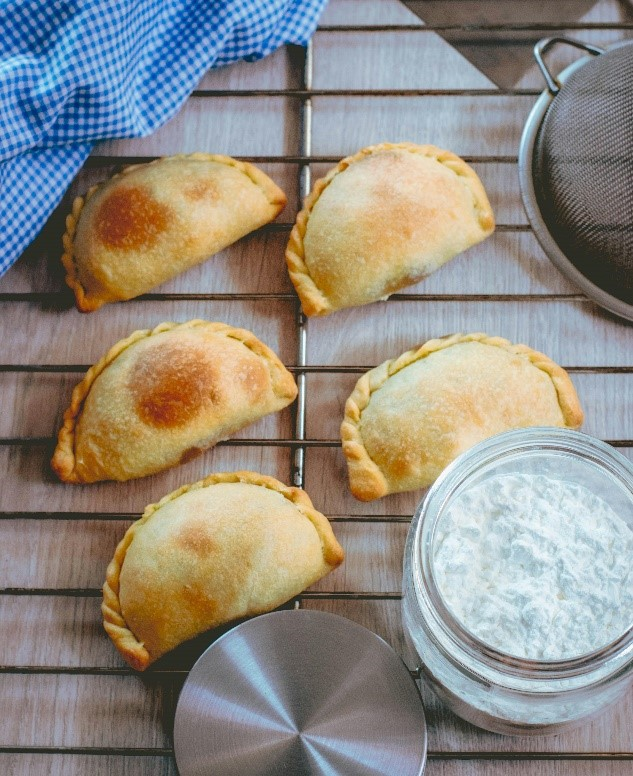

Highlands Cuisine
Explore the hearty and flavorful dishes of Peru’s highlands, where traditional recipes meet bold, satisfying flavors.
Popular Foods in the Highlands

- Llomo saltado
- This iconic stir-fry is a perfect example of Peru’s cultural fusion, blending Chinese and Peruvian culinary traditions. It features tender strips of beef sautéed with onions and tomatoes, all marinated in soy sauce for a depth of flavor. The dish is served with fries and rice, creating a satisfying and hearty meal. Widely loved across the country, Lomo Saltado is a must-try for anyone exploring Peruvian cuisine.

- Papa a la Huancaina
- A popular appetizer, Papa a la Huancaína is a dish that combines simplicity with bold flavors. It consists of boiled potatoes draped in a creamy, mildly spicy cheese sauce called "Huancaína." This sauce is made with fresh cheese, yellow chili peppers, and milk, offering a rich and tangy taste. The dish is often garnished with olives and served alongside boiled egg slices.

- Empanada
- These are savory pastries filled with ingrediants such as beef, chicken, cheese, or vegetables, it is often seasoned with cumin and paprike. These are found all around Peru, but i'd say you would find the best made in the andean region. This food is usually ate during breakfast or late at night in a cafe. You can expaect to see many food stands selling these pastries around Cuscoo, Peru.